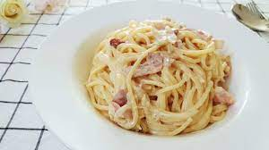

양식 레시피
스테이크

재료:
- 스테이크 (200g)
- 소금
- 후추
- 버터 (20g)
조리 방법:
- 스테이크에 소금과 후추를 뿌립니다.
- 팬에 버터를 녹여 고기를 익힙니다.
-
적당한 익힘 정도에 도달하면 스테이크를 접시에 옮기고 조금 식힙니다.
- 그 후 스테이크를 잘라서 서빙합니다.
스파게티 까르보나라

재료:
- 스파게티 (200g)
- 베이컨 (100g)
- 양파 (1개)
- 생크림 (200ml)
- 파마산 치즈 (40g)
- 소금
- 후추
조리 방법:
- 물에 소금을 넣고 스파게티를 삶습니다.
- 팬에 베이컨과 양파를 볶습니다.
- 삶은 스파게티를 팬에 넣고 생크림을 추가합니다.
-
적당한 시간 동안 익힌 후, 파마산 치즈와 소금, 후추로 맛을 조절합니다.
- 그 후에 스파게티를 그릇에盛り付け하여 서빙합니다.